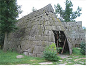
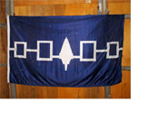
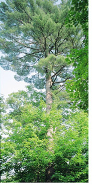
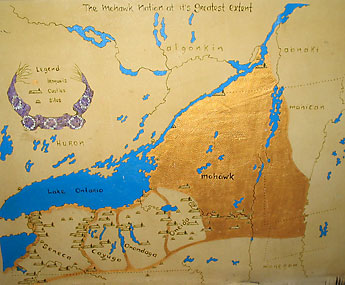

Iroquois
The Iroquois lived very differently from the Algonquin. They had communal houses, called longhouses, where they all lived together, each family taking a section of the longhouse. These constructions were made from elm and ash wood, usually consisting of three levels inside.
The Iroquois were farmers. Squash, beans and corn were their staples. They had various tribes and the woman was the leader: matriarchal. They always married someone from a different tribe and the man would move in with his wife.

Five Nations
The symbol indicates the Five Nations who made peace. There’s a story incorporated in my book about how they made peace. A Huron paddled across Lake Ontario in a stone canoe that didn’t sink and approached Hiawatha—a chief who’d lost seven daughters to war—about making peace with other nations. His name was Dekanawida or they refer to him as the Peacemaker. The Five Nations that joined together were the Mohawk or Kanienkehaka (People of the Flint), Onondaga (People of the Many Hills), Seneca (People of the Mountain), Cayuga (People of the Landing) and Oneida (People of the Standing Stone). They each had a certain number of feathers in their headdress to indicate which nation they were from. The Mohawk have two feathers. In the center is a tree—a white pine.
White Pine
The words for the White Pine Tree, when translated from Mohawk to English, mean “tree of the long leaves.” These are the green needles of the pine. The pine never sheds its leaves and always remains green unlike the maple or oak. This symbol is likened to the Great Law, which will always flourish like the evergreen pine, a powerful symbol of one of the founding principles of the Great Law, Kasenthstensera, enduring strength. The pine needles grow in bundles of five joined at the base. This represents another founding principle of the Great Law, that the Five Nations are bound together in peace.
Why do you think this peaceful alliance was so important?
It was a blueprint for the United States and United Nations today. They were the first people in North America to ever join other nations in peace.